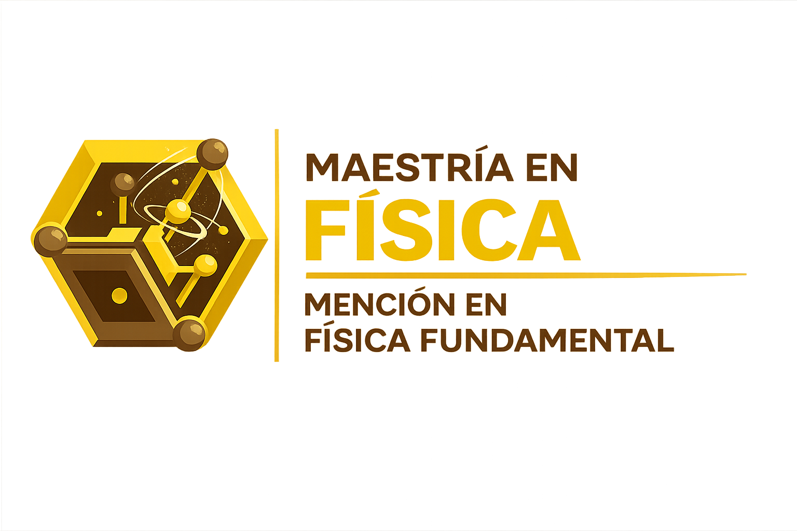
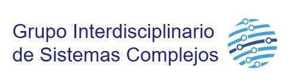
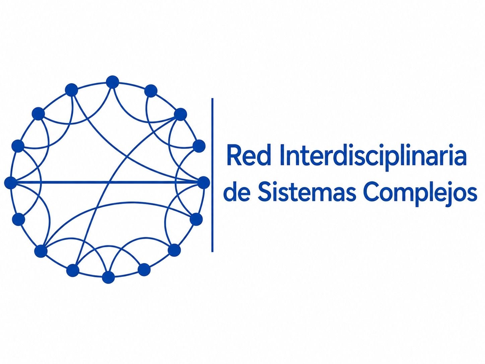
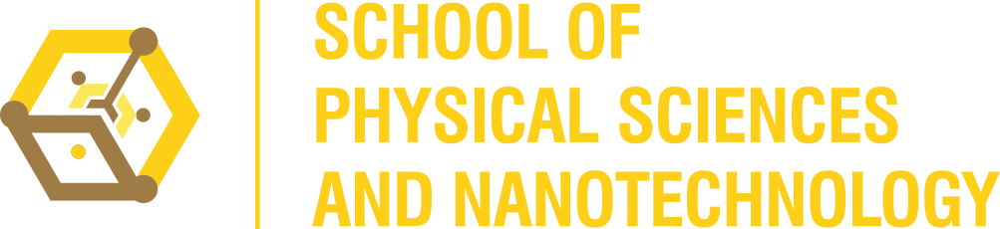

Viernes 5 de Junio de 2026
Universidad Yachay Tech
Las III Jornadas de Sistemas Complejos y Dinámica Social constituyen un espacio interdisciplinario diseñado para explorar los avances, metodologías y aplicaciones de las ciencias de la complejidad en la comprensión de los fenómenos sociales. Tras el éxito de sus dos ediciones anteriores celebradas en la ciudad de Cuenca, este encuentro científico se traslada a las instalaciones de Yachay Tech.
Esta iniciativa forma parte activa de las agendas de investigación de la Red Interdisciplinaria de Sistemas Complejos (RISC), organismo registrado y respaldado por la REDU, en conjunto con el Grupo Interdisciplinario de Sistemas Complejos (GISC) afiliado a Yachay Tech.
Durante este encuentro, las y los asistentes tendrán la oportunidad de:
El evento se llevará a cabo en una sola jornada el día viernes, 5 de Junio de 2026.
Horario tentativo estructurado en dos bloques:
Mañana: 9:00 - 12:30
Tarde: 14:00 - 17:30
El evento se desarrollará de forma presencial en el aula A17 en el segundo piso del Edif. Senescyt en el campus de la Universidad Yachay Tech.
Contaremos con un formato híbrido que combinará la participación presencial de invitados nacionales con ponentes internacionales conectados en modalidad online.
¿Te interesa participar en este evento académico gratuito? Regístrate ahora utilizando el formulario a continuación.
Movilidad y propagación de epidemias en redes biológicas y sociales.
José Luis Herrera-Diestra (online) — Tarleton State University, USA.
Título por confirmar
Juan Sebastian Velez (online) — Okinawa Institute of Technology, Japón
Coffee break
Competencia de medios de comunicación en dinámica social.
Orlando Alvarez — Universidad Católica de Cuenca, Ecuador
Receso / Almuerzo
Formación de comunidades en redes adaptativas.
Mario Cosenza — Universidad Yachay Tech, Ecuador
Patrones lingüísticos en comunidades: una perspectiva desde los sistemas complejos.
Mateo Carpio (online) — Instituto de Física Interdisciplinar y Sistemas Complejos, España.
Coffee break
Competencia sin ganador como mecanismo de organización en sistemas complejos.
Esther Gutiérrez — ESPOL, Ecuador

El programa de Maestría en Física con mención en Física Fundamental de la Universidad Yachay Tech organiza regularmente seminarios, talleres, escuelas científicas y eventos interdisciplinarios en áreas como astrofísica, cosmología, sistemas complejos, física computacional y aprendizaje automático.
¡Te invitamos a formar parte de nuestra comunidad académica! Las inscripciones se encuentran abiertas hasta el 31 de julio de 2026. Puedes revisar todos los requisitos y postular directamente aquí.


